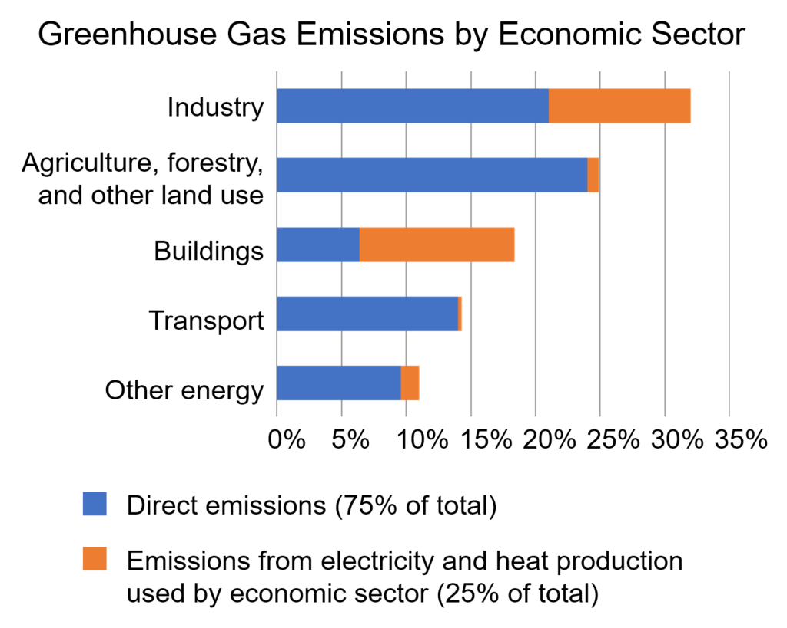

Responses
Mitigation of and adaptation to climate change are two complementary responses to global warming. Successful adaptation is easier if there are substantial emission reductions. Many of the countries that have contributed least to global greenhouse gas emissions are among the most vulnerable to climate change, which raises questions about justice and fairness with regard to mitigation and adaptation.
Mitigation

Climate change can be mitigated through the reduction of greenhouse gas emissions or the enhancement of the capacity of carbon sinks to absorb greenhouse gases from the atmosphere. There is a large potential for future reductions in emissions by a combination of activities, including energy conservation and increased energy efficiency; the use of low-carbon energy technologies, such as renewable energy, nuclear energy, and carbon capture and storage; decarbonizing buildings and transport; and enhancing carbon sinks through, for example, reforestation and preventing deforestation. A 2015 report by Citibank concluded that transitioning to a low-carbon economy would yield a positive return on investments.
Drivers of greenhouse gas emissions
Over the last three decades of the twentieth century, gross domestic product per capita and population growth were the main drivers of increases in greenhouse gas emissions. CO2 emissions are continuing to rise due to the burning of fossil fuels and land-use change. Emissions can be attributed to different regions. The attribution of emissions from land-use change is subject to considerable uncertainty.
Emissions scenarios, estimates of changes in future emission levels of greenhouse gases, depend upon uncertain economic, sociological, technological, and natural developments. In some scenarios emissions continue to rise over the century, while others have reduced emissions. Fossil fuel reserves are abundant, and will not limit carbon emissions in the 21st century. Emission scenarios can be combined with modelling of the carbon cycle to predict how atmospheric concentrations of greenhouse gases might change in the future. According to these combined models, by 2100 the atmospheric concentration of CO2 could be as low as 380 or as high as 1400 ppm, depending on the Shared Socioeconomic Pathway (SSP) the world takes and the mitigation scenario.
Reducing greenhouse gases

Near- and long-term trends in the global energy system are inconsistent with limiting global warming to below 1.5 or 2 °C relative to pre-industrial levels. Current pledges made as part of the Paris Agreement would lead to about 3.0 °C of warming at the end of the 21st century, relative to pre-industrial levels. To keep warming below 2 °C, more stringent emission reductions in the near-term would allow for less rapid reductions after 2030. To keep warming under 1.5 °C, a far-reaching system change on an unprecedented scale is necessary in energy, land, cities, transport, buildings, and industry. A report, published just before the 2019 UN Climate Action Summit, says that the full implementation of all pledges taken by international coalitions, countries, cities, regions and businesses (not only in the Paris Agreement) would be sufficient to limit temperature rise to 2 °C but not to 1.5 °C. All the information about the pledges is added to the UNFCCC Global Climate Action portal. The scientific community is checking their fulfilment.
Co-benefits of climate change mitigation may help society and individuals more quickly. For example, bicycling reduces greenhouse gas emissions while reducing the effects of a sedentary lifestyle at the same time. The development and scaling-up of clean technology, such as cement that produces less CO2, is critical to achieve sufficient emission reductions for the Paris agreement goals. Many integrated models are unable to meet the 2 °C target if pessimistic assumptions are made about the availability of mitigation technologies.
It has been suggested that the most effective and comprehensive policy to reduce carbon emissions is a carbon tax or the closely related emissions trading. Individual action on climate change to reduce a person's carbon footprint include: limiting overconsumption, living car-free, forgoing air travel and adopting a plant-based diet.